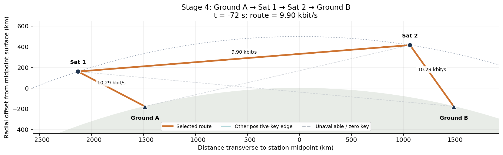
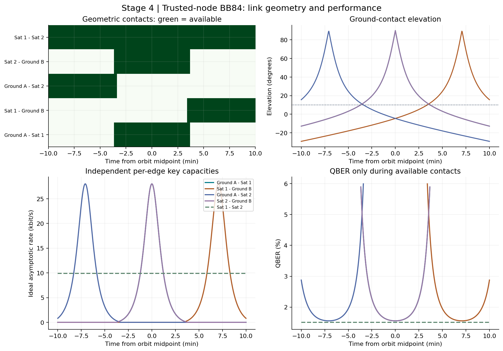
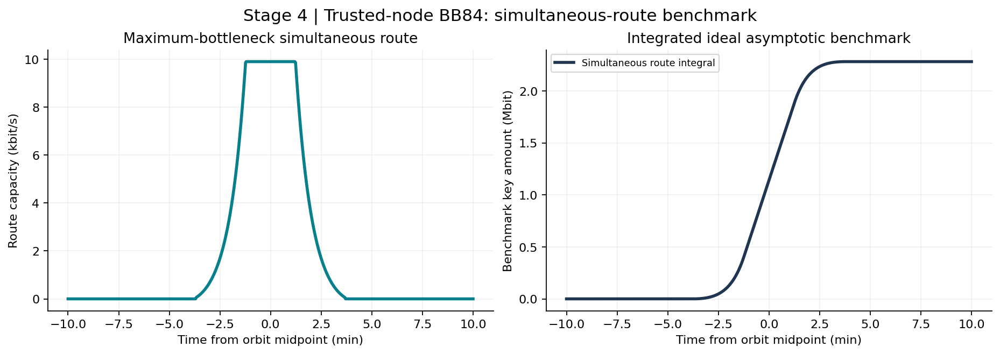

Illustrative trusted QKD relay network. Ground separation 3000 km; circular orbit altitude 500 km; independent terminals and pulse budget per edge.
| peak_rate_bps | 9,897.53 |
|---|---|
| integrated_key_bits | 2.28195e+06 |
| connected_duration_s | 442 |
| best_index | 264 |
Rates and integrals are model-known infinite-decoy asymptotic benchmarks. The route integral assumes simultaneous independent link operation, one selected route, and negligible relay overhead. Trusted satellites learn relayed keys; this is not a quantum repeater simulation. Finite-key effects, clouds, Earth rotation, terminal scheduling, authentication costs and actual key generation are omitted.



Data: routes.csv · edges.csv · parameters and summary. CSV edge indices and best_index are zero-based.
The stage-3 stored-pair bound is the smaller full-window ground-link integral, assuming independent terminals, unlimited classical key storage and later authenticated relay. Stage 4 does not schedule key inventories.